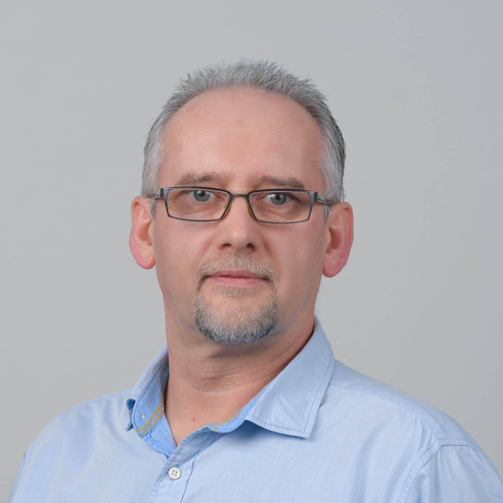

Stanislav Rurik

Summary
I am hard working individual with experience in Electromechanical assembly and Quality Management
PROFESSIONAL EXPERIENCE
11.2022 - Quality Specialist, Moog GmbH, Böblingen
- Creation of Quality Notifications Q2, F2, 8D
- Suppliers complaints
- Processing quality notifications in SAP QM
- Contact person for quality problems in Production
- SAP QM, use of 8D methodologies
- Contact person for suppliers in the area of electronics and cabling
09.2018 – 12.2021 Machine fitter, Kion Group AG, Reutlingen
- Assembly of Linde and Still high rack vehicles
- Assembly of accessories in cabin, including electrical & electronic components and cabling
11.2016 – 09.2018 Ferchau Engineering, Reutlingen
08.2018 – 09.2018 Sample builder, Marelli Automotive Lightning, Reutlingen
- Creation and post-processing of laser sintering sample parts according to the project plan
06.2018 – 08.2018 Laboratory employee, Bosch Sensortec GmbH, Reutlingen
- Measurements on micromechanical sensors
- Soldering work in the laboratory
11.2016 – 06.2018 Test driver of high-rack vehicles, Kion Group AG, Reutlingen
- Driving and evaluating the behavior of vehicle prototypes as part of development projects
- Maintaining event logs
- Participation in vehicle modifications
09.2012 – 10.2016 Laboratory technician,
Johnson Electric Germany GmbH, Leinfelden-Echterdingen
- Measurements DC motors for automotive
- Finding solutions and analyzing errors
- Testing and complete analysis with oscilloscopes, Magtrol (torque)
- General laboratory activities
- Instruction/training of sorting staff
- Management of sorting companies at home and abroad for customers
- Quality control
- D Report, Ishikawa, 5-Why
04.2011 – 08.2012 Electrician, K & A Knödler GmbH, Ostfildern
- Press off the motor housing
- Press in stators
- Check stators - electrical/optical
- Final inspection of the electric motors
05.2010 – 03.2011 Employee in production, Contact Connectors GmbH, Vaihingen
- Drilling with CNC Stama MC021
- Press in stators
- Setting up and retrofitting work machines
- Final inspection
02.2010 Entry in Germany
10.2009 – 02.2010 Order picker, ND Logistics Nederland B.V., Venray, NL
01.2009 – 09.2009 Employee in cable assembly,
Kaliber LTD, Swindon, UK
- Production of wire harnesses
- Soldering, crimping
- Quality inspection
01.2004 – 09.2008 Self-employed in cable assembly Cable Slovakia s.r.o. (Electronics sub-contractor), Zilina, Slovakia
- Production management
- Quality control
- Management of 23 employees
- Collaboration with international companies
01.1993 – 12.2003 Building construction company (self-employed) Rurik Edil Work S.R.L., Sacile, Italy
01.1990 – 12.1992 Construction and agricultural activities in France & Spain
*Times not listed are job search times
SCHOOL & FURTHER EDUCATION
10.2023 – 10.2023 QM Internal Auditor TÜV Rheinland Academy
05.2023 – 05.2023 Basics of internal auditor DGQ – German Society for Quality
05.2023 – 05.2023 Basics of APQP VOREST AG Education Center
05.2023 – 05.2023 Basics of PPAP and VDA 2 VOREST AG Education Center
07.2022 - 09.2022 SAP user (PP) Alfatraining Education Center
03.2022 - 04.2022 QM Manager Alfatraining Education Center
02.2022 - 03.2022 QMB Quality Rapresentative Alfatraining Education Center
09.1985 - 12.1989 Painter College Military constructions
09.1977 - 07.1985 Elementary and secondary school Slovakia
SPECIAL KNOWLEDGE
LANGUAGE SKILLS
- English (B2)
- German (B2)
- Slovakian (C2)
- Italian (B2)
- Polish (B2)
IT KNOWLEDGE
- MS Office (advanced knowledge)
- SAP PP (users), S/4HANA, SAP FIORI
- SAP QM (user)
- Accounting software – basic knowledge
- WordPress
PERSONAL STRENGTHS
- Sense of responsibility
- Quick comprehension
- Reliability
- Punctuality
- Ability to work in a team
- Learning ability